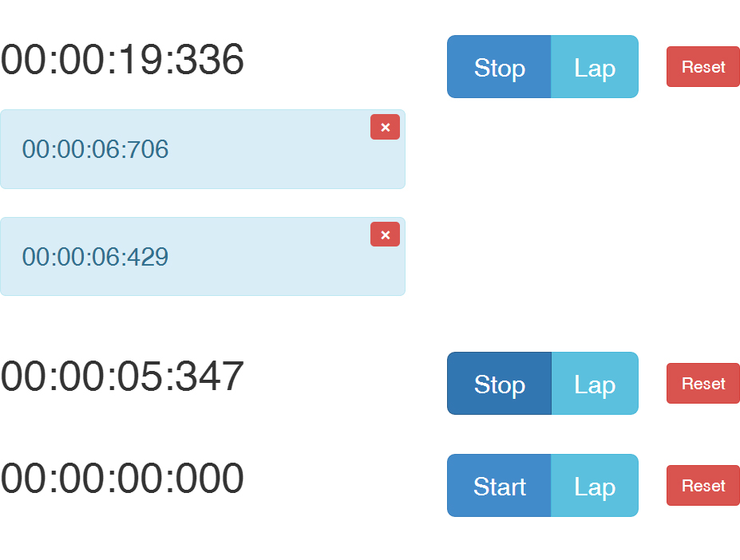
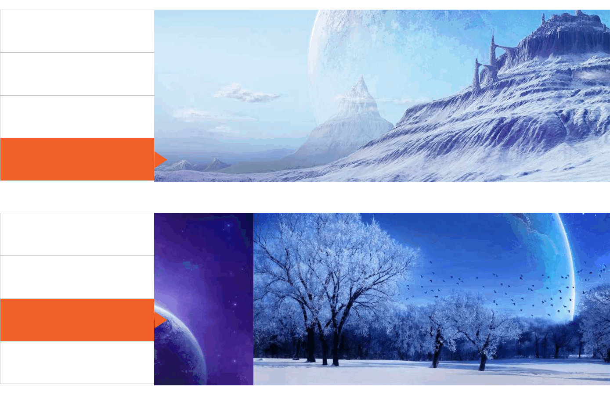
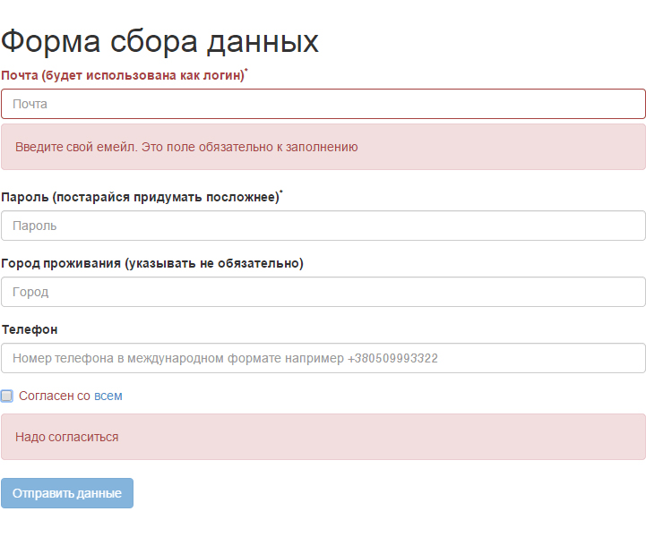

Pavel Safonov
View My GitHub Profile
Some of my works
Tag's List
View in new tab | View sourceЗадачей было cоздать виджет TagList.
Виджет может переключаться из режима "редактирования" в режим "просмотра". Для переключения используется одна кнопка. Кнопка меняет свой текст в зависимости от режима. Он может быть инициализирован с предопределенным списком тегов, который передается опциональным аргументом.

В режиме просмотра теги выглядят как список тегов (один за другим). На странице может быть сколько угодно виджетов TagList. Также в режиме редактирования теги можно удалять (рядом с тегами появляется крестик удаления).
Для добавления тегов используется поле ввода с кнопкой "Add". После добавления тега поле ввода очищается. Добавить уже существующий тег нельзя. Пробелы с концов строки не влияют на тег.
Stopwatch
View in new tab | View sourceНеобходимо было реализовать виджет "Cекундомер".
Кнопки "Stop", "Start" (одна и та же кнопка), "Reset", "Lap". Секундомер работает с точностью до миллисекунд. Когда он запущен, показывается время в формате чч:мм:сс:мс. Нажатие на кнопку "Stop" останавливает ход секундомера. Кнопка "Lap" добавляет текущее значение секундомера в список результатов. Элементы из списка результатов можно удалять поштучно.
Кнопка "Reset" останавливает секундомер, если тот бежит, сбрасывает значение в нули, убирает все результаты, если такие есть. "Lap" работает одинаково для остановленного и запущенного секундомеров.
Управление с клавиатуры: S - Start/Stop, L - Lap, R - Reset.
Если на странице несколько секундомеров, с клавиатуры управляется тот, над последним из которых находилась мышка.
Slider
View in new tab | View sourceРеализован слайдер.
Слайдер состоит из фиксированного количества слайдов (4 шт.), изображения имеют одинаковый заранее известный размер. Переход между слайдами анимирован.
При клике на кнопку слева происходит переход к соответствующему слайдеру. Сразу же после инициализации у слайдера включается режим автопрокрутки: показ следующего слайда каждые 2 секунды.
Если пользователь кликнул на одну из кнопок, перейдя к слайду, автопрокрутка отключается, а запускается заново через 5 секунд после последнего клика пользователя по кнопке. Автопрокрутка циклическая: с последнего слайда происходит переход к первому.
На странице можно разместить несколько слайдеров. Слайдер работает в IE9+. Не использовались никакие готовые плагины, только самописный код
Form Validation
View in new tab | View sourceВыполнение валидации формы сбора данных.
Поля формы валидируются в процессе набора (ошибки не отображаются до того, как пользователь что-то ввел). Форму нельзя отправить, если есть ошибки.
Если показаны ошибки, кнопка отправки формы неактивна. Поля заполненные с ошибками подсвечиваються. Решение работает в IE9+